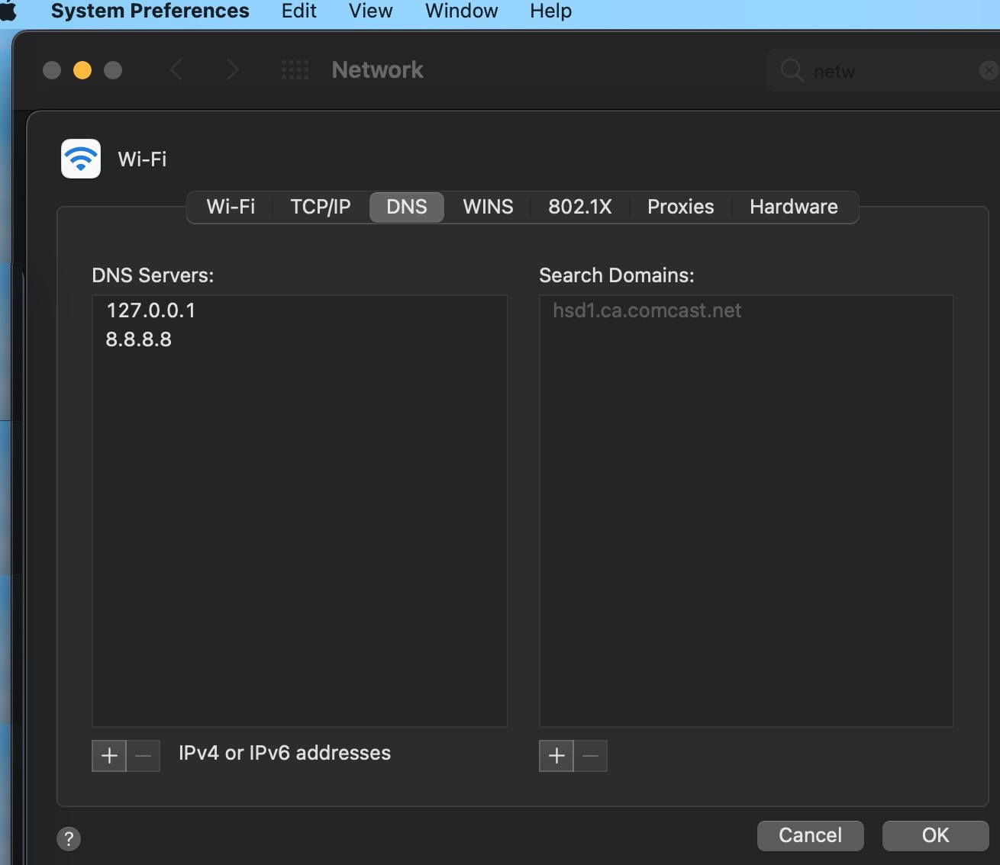
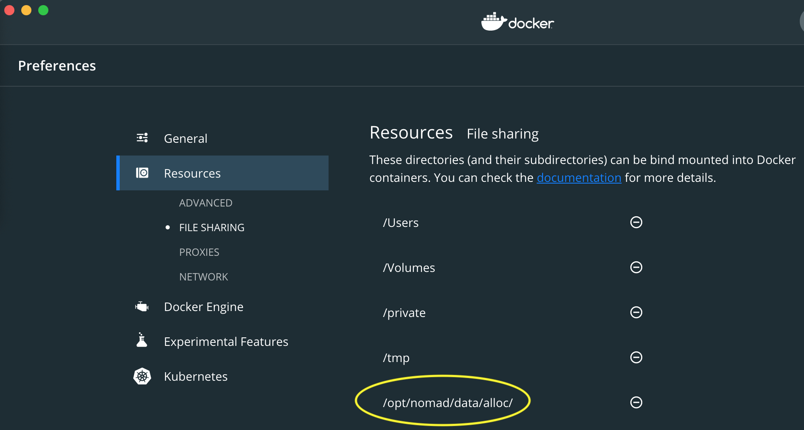

# 🚂 DevOps Training
## Week 4
### Feb 24, 2021
Slides: https://archive.org/~tracey/slides/devops/
---
## Don't forget!
### press record
---
# setup Nomad & Consul on your Mac
---
## Attendees
tracey, matt, jason, clau,
drini, sawood, brenton, corentin
---
## Overview
- Install nomad server & server
- securely talking together
- auto-elect cluster leaders
- Install load balancer / edge router "fabio"
- Some support for Persistent Volumes
---
## HTTPS Wildcard Certs
let's make https://moo.test.archive.org point to your mac
```bash
GITLAB_HOME=$HOME/gitlab
mkdir -p ${GITLAB_HOME?}/tls
cd ${GITLAB_HOME?}/tls
scp -p home.archive.org:/home/tracey/dev/nomad/certs/test.archive.org-cert.pem .
scp -p home.archive.org:/home/tracey/dev/nomad/certs/test.archive.org-key.pem .
chmod 400 test.archive.org-key.pem
cd
```
---
## Packages
Suggest get packages going in background / side terminal tab
- install binaries and service files
- eg: /usr/local/bin/nomad /opt/nomad
```bash
brew install nomad consul
```
if consul doesn't install, try
```bash
brew tap hashicorp/tap
brew install hashicorp/tap/consul
```
---
### Environment setup
start a new `Terminal` shell/tab
(first `unset`s are to avoid any environment contamination)
---
unset NOMAD_ADDR
unset NOMAD_TOKEN
export GITLAB_HOME=$HOME/gitlab
export TLS_CRT=${GITLAB_HOME?}/tls/test.archive.org-cert.pem
export TLS_KEY=${GITLAB_HOME?}/tls/test.archive.org-key.pem
export DOMAIN=$(basename "${TLS_CRT?}" |rev |cut -f2- -d- |rev)
export FIRST=nom.${DOMAIN?}
export NOMAD_ADDR="https://${FIRST?}:4646"
export PV_MAX=20
export PV_DIR=/pv
export FIRSTIP=$(ifconfig |egrep -o 'inet [0-9\.]+' |cut -f2 -d' ' |fgrep -v 127.0.0 |head -1)
export PV_DIR=/opt/nomad/pv
export NOMAD_HCL=/etc/nomad.d/nomad.hcl
export CONSUL_HCL=/etc/consul.d/consul.hcl
export NOMAD_COUNT=1
export CONSUL_COUNT=1
typeset -a SYSCTL
export SYSCTL=(brew services)
---
## Sanity Checks
```bash
echo $FIRST # nom.test.archive.org
echo $FIRSTIP # your mac's IP address - likely 192.168.1.*
```
---
## Setup Certs
# sets up https / TLS and fabio for routing, loadbalancing, and https traffic
CRT=/etc/fabio/ssl/${DOMAIN?}-cert.pem
KEY=/etc/fabio/ssl/${DOMAIN?}-key.pem
GRP=wheel
sudo mkdir -p /etc/fabio/ssl/
sudo chown root:${GRP?} /etc/fabio/ssl/
sudo cp ${TLS_CRT?} ${CRT?}
sudo cp ${TLS_KEY?} ${KEY?}
sudo chown root:${GRP?} ${CRT} ${KEY}
sudo chmod 444 ${CRT}
sudo chmod 400 ${KEY}
# reuse same certs for encrypted traffic between nomad & consul servers
sudo mkdir -m 500 -p /opt/nomad/tls
sudo cp $CRT /opt/nomad/tls/tls.crt
sudo cp $KEY /opt/nomad/tls/tls.key
sudo chmod -R go-rwx /opt/nomad/tls
---
## Setup stock Nomad & Consul
```bash
cd /tmp
sudo mkdir -p $(dirname ${NOMAD_HCL?})
sudo mkdir -p $(dirname ${CONSUL_HCL?})
```
---
## Setup stock Nomad
```bash
# start with unix pkg defaults
echo '
data_dir = "/opt/nomad/data"
bind_addr = "0.0.0.0"
server {
enabled = true
bootstrap_expect = 1
}
client {
enabled = true
servers = ["127.0.0.1:4646"]
}
' | sudo tee $NOMAD_HCL
```
---
## Setup stock Consul
```bash
# start with unix pkg defaults
echo '
data_dir = "/opt/consul"
client_addr = "0.0.0.0"
ui = true
' | sudo tee $CONSUL_HCL
```
---
## Config stashing
```bash
# restore original config (if reran)
[ -e $NOMAD_HCL.orig ] && sudo cp -p $NOMAD_HCL.orig $NOMAD_HCL
[ -e $CONSUL_HCL.orig ] && sudo cp -p $CONSUL_HCL.orig $CONSUL_HCL
# stash copies of original config
sudo cp -p $NOMAD_HCL $NOMAD_HCL.orig
sudo cp -p $CONSUL_HCL $CONSUL_HCL.orig
```
---
## DNS Wildcard Domain - pointing to Mac
- sets up a wildcard dns domain to resolve to your mac
- [inspiration](https://hedichaibi.com/how-to-setup-wildcard-dev-domains-with-dnsmasq-on-a-mac/)
```bash
brew install dnsmasq
echo "
# from https://gitlab.com/internetarchive/nomad/-/blob/master/setup.sh
address=/${DOMAIN?}/${FIRSTIP?}
listen-address=127.0.0.1
" |tee $(brew --prefix)/etc/dnsmasq.conf
sudo ${SYSCTL?} start dnsmasq
```
---
## DNS Wildcard Domain - Additional Step
- [System Preferences]
- [Network]
- [Advanced]
- [DNS]
- [DNS Servers]
- add '127.0.0.1' as *first* resolver
- (ie: change order once added)
---
## DNS Wildcard Domain

---
## DNS verify
- verify host lookups are working now
```bash
host something.test.archive.org
```
should point to your IP address
(and not `kube*.us.archive.org`)
---
## Persistent Volumes
- One server in cluster gets marked for hosting repos with Persistent Volume requirements.
- Keeping things simple, and to avoid complex multi-host solutions like rook/ceph, we'll
pass through these `/pv/` dirs from the VM/host to containers.
- Each container using it needs to use a unique subdir...
```bash
for N in $(seq 1 ${PV_MAX?}); do
sudo mkdir -m777 -p ${PV_DIR?}/$N
done
```
---
## Setup Daemons
- get services ready to go
- switch from `-dev` mode to production mode
- use our config
```bash
sed -i -e 's|-dev|-config=/etc/nomad.d|' \
$(brew --prefix)/Cellar/nomad/*/*plist
sed -i -e 's|-dev|-config-dir=/etc/consul.d/|'\
$(brew --prefix)/Cellar/consul/*/*plist
sed -i -e 's|-bind||' $(brew --prefix)/Cellar/consul/*/*plist
sed -i -e 's|127.0.0.1||' $(brew --prefix)/Cellar/consul/*/*plist
sudo ${SYSCTL?} start nomad
sudo ${SYSCTL?} start consul
```
---
## Configure Nomad & Consul
- For 2+ node clusters, we have to make _all_ nomad servers VERY angry first, before we can get a leader and token
---
## Configure Nomad
- This is to boostrap communication between 2+ nodes running full nomad servers.
- They will each seek this number minus one to `gossip` and **consensus** elect a leader.
- Each nomad server VM can run/stop jobs as a "control plane".
- Each stays sync-ed with the leader, in case leader vanishes.
```bash
sudo sed -i -e 's^bootstrap_expect =.*$^bootstrap_expect = '${NOMAD_COUNT?}'^' $NOMAD_HCL
```
---
## Communication Overviews
- [nomad](https://learn.hashicorp.com/tutorials/nomad/production-reference-architecture-vm-with-consul#deployment-topology-within-a-single-region)
- [consul](https://www.consul.io/docs/architecture)
---
## Configure Nomad - encrypted gossip
```bash
# mint a nomad encryption token
TOK_N=$(nomad operator keygen |tr -d ^ |cat)
echo '
name = "'$(hostname -s)'"
server {
encrypt = "'${TOK_N?}'"
server_join {
retry_join = ["'${FIRSTIP?}'"]
retry_max = 0
}
}' | sudo tee -a $NOMAD_HCL
```
---
## Configure Nomad
```bash
echo '
addresses {
http = "0.0.0.0"
}
advertise {
http = "{{ GetInterfaceIP \"eth0\" }}"
rpc = "{{ GetInterfaceIP \"eth0\" }}"
serf = "{{ GetInterfaceIP \"eth0\" }}"
}
' | sudo tee -a $NOMAD_HCL
```
---
## Configure Nomad - docker
```bash
# ensure docker jobs can mount volumes
echo '
plugin "docker" {
config {
volumes {
enabled = true
}
}
}
' | sudo tee -a $NOMAD_HCL
```
---
## Configure Nomad - raw exec
- enable raw_exec alternate driver
```bash
echo '
plugin "raw_exec" {
config {
enabled = true
}
}
' | sudo tee -a $NOMAD_HCL
```
---
## Configure Nomad - HTTPS
- https communication only!
- @see https://learn.hashicorp.com/nomad/transport-security/enable-tls
```bash
echo '
acl {
enabled = true
}
tls {
http = true
cert_file = "/opt/nomad/tls/tls.crt"
key_file = "/opt/nomad/tls/tls.key"
}
' | sudo tee -a $NOMAD_HCL
```
---
## Configure Nomad - Kinds
- We'll put a loadbalancer on all cluster nodes
- All jobs requiring a PV get put on first cluster node
```bash
KIND=worker
KIND="$KIND,lb"
KIND="$KIND,pv"
echo '
client {
meta {
"kind" = "'$KIND'"
}
}' | sudo tee -a $NOMAD_HCL
```
---
## Configure Nomad - HOME dirs
```bash
echo '
client {
host_volume "home-ro" {
path = "/home"
read_only = true
}
host_volume "home-rw" {
path = "/home"
read_only = false
}
}' | sudo tee -a $NOMAD_HCL
```
---
## Configure Nomad - Persistent Volumes
```bash
(
echo '
client {'
# pass through disk from host for now.
# peg project(s) with PV requirements to this host.
for N in $(seq 1 ${PV_MAX?}); do
echo -n '
host_volume "pv'$N'" {
path = "'$PV_DIR'/'$N'"
read_only = false
}'
done
echo '
}'
) | sudo tee -a $NOMAD_HCL
```
---
## Restart Nomad
```bash
sudo ${SYSCTL?} restart nomad
sleep 10
```
---
## Configure Consul
- setup encrypted communication
```bash
# mint an encryption token
TOK_C=$(consul keygen |tr -d ^)
echo '
server = true
advertise_addr = "{{ GetInterfaceIP \"eth0\" }}"
node_name = "'$(hostname -s)'"
bootstrap_expect = '${CONSUL_COUNT?}'
encrypt = "'${TOK_C?}'"
retry_join = ["'${FIRSTIP?}'"]
' | sudo tee -a $CONSUL_HCL
```
---
## Restart Consul
```bash
sudo ${SYSCTL?} restart consul
sleep 10
```
---
## Avoid Consul join issues
- avoid failures join-ing and messages like:
- `No installed keys could decrypt the message`
```bash
sudo rm -fv /opt/consul/serf/local.keyring
sudo ${SYSCTL?} restart consul
sleep 10
```
---
## Nomad bootstrap - get ACL token
```bash
CONF=$HOME/.config/nomad
[ -e $CONF ] && mv $CONF $CONF.prev # stash any current file
NOMACL=$HOME/.config/nomad.$(echo ${FIRST?} |cut -f1 -d.)
mkdir -p $(dirname $NOMACL)
chmod 600 $NOMACL $CONF 2>/dev/null |cat
nomad acl bootstrap |tee $NOMACL
```
---
## NOMAD_ADDR + NOMAD_TOKEN
```bash
echo "
export NOMAD_ADDR=$NOMAD_ADDR
export NOMAD_TOKEN="$(fgrep 'Secret ID' $NOMACL |cut -f2- -d= |tr -d ' ') |tee $CONF
chmod 400 $NOMACL $CONF
source $CONF
```
( can run later if needed: )
```
nomad acl token self
```
---
## Docker tweak
- ensure `Docker.app` / `docker` daemon is running
- allow containers to use `/opt/nomad/data/alloc/`
- 🐳 [Preferences] [Resources] [File Sharing] ⊕

if issues, could try: `sudo chmod 755 /opt/nomad/data/alloc/`
---
## Validation!
- now we can finally 🤦♀️ get them to cluster up, elect a leader, and do their _friendly_ job
```bash
consul members
nomad server members
nomad node status
sleep 30
```
---
## Load balancer / edge router
- ideally `fabio` is running in `docker`..
- but macos issues so alt "exec" driver instead of "docker"
- [inspiration](https://medium.com/hashicorp-engineering/hashicorp-nomad-from-zero-to-wow-1615345aa539)
- [fabio job](https://gitlab.com/internetarchive/nomad/-/blob/master/etc/fabio-exec.hcl)
```bash
wget -qO- https://gitlab.com/internetarchive/nomad/-/raw/master/etc/fabio-exec.hcl | nomad run -
```
---
## Try a "hi world" job 🚀
[hi world job](https://gitlab.com/internetarchive/nomad/-/blob/master/etc/hello-world.hcl)
```bash
wget https://gitlab.com/internetarchive/nomad/-/raw/master/etc/hello-world.hcl
perl -i -pe 's/x.archive.org/test.archive.org/' hello-world.hcl
nomad run hello-world.hcl
nomad status hello-world
```
- https://internetarchive-bai-master.test.archive.org/
---
### 💥 CONGRATULATIONS! Your cluster is setup 💥
Get started with the UI
**Nomad** (deployment: container management & scheduling):
https://www.nomadproject.io
```bash
open $NOMAD_ADDR
```
- login with `NOMAD_TOKEN` from `$HOME/.config/nomad`
- keep this ^^ safe!
---
### 💥 CONGRATULATIONS! Your cluster is setup 💥
**Consul** (networking: service discovery & health checks):
- http://localhost:8500
- https://www.consul.io
---
### 💥 CONGRATULATIONS! Your cluster is setup 💥
**Fabio** (routing: load balancing, ingress/edge router, https and http2 termination (to http))
- http://localhost:9998
- https://fabiolb.net
---
## Uninstall? 😔
- https://gitlab.com/internetarchive/nomad/-/blob/master/macos-uninstall.sh